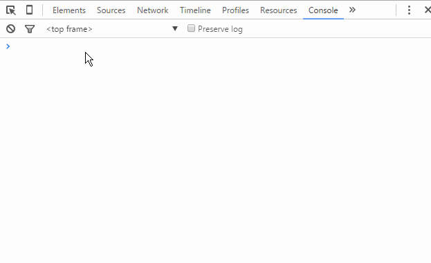
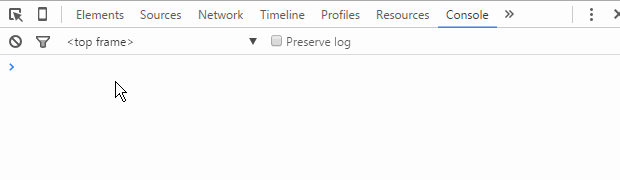
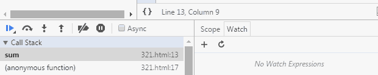
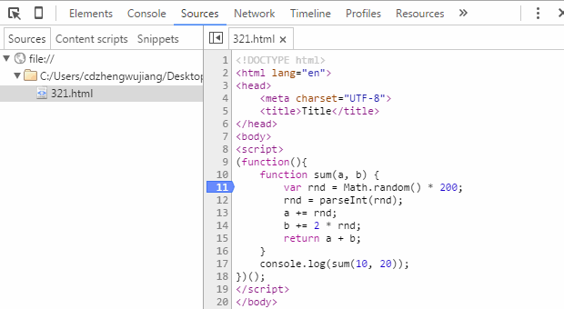
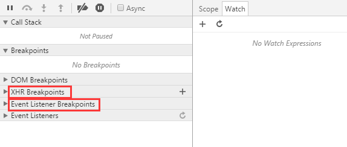

ご注意：記事内には多くのGifデモアニメーションが含まれています。モバイル端末ではなるべくWi-Fi環境でお読みください。
はじめに：デバッグテクニックは、あらゆる技術開発において必要不可欠なスキルと言えます。さまざまなデバッグテクニックを習得すれば、仕事において必ず半分の労力で倍の効果を得られます。例えば、問題の迅速な特定、障害発生確率の低減、論理エラーの分析支援などです。そして、インターネットのフロントエンド開発がますます重要になっている今日、フロントエンド開発で開発コストを下げ、作業効率を高めるために、フロントエンド開発のデバッグテクニックを習得することが特に重要です。
本記事では、さまざまなフロントエンドJSデバッグテクニックを一つずつ解説します。すでに熟練している方も、一緒に復習しましょう。見たことのない方法があるかもしれません。ぜひ一緒に学びましょう。まだデバッグ方法をご存じない方は、この機会にぜひ知識の空白を埋めましょう。
1、骨董級デバッグマスターAlert
それはインターネットがようやく始まった時代で、Webページのフロントエンドはまだ主にコンテンツ表示が中心で、ブラウザスクリプトはページにごく簡単な補助機能を提供するだけでした。当時、Webページは主にIE6を中心としたブラウザで動作しており、JSのデバッグ機能は非常に弱く、Windowオブジェクトに組み込まれたalertメソッドでしかデバッグできませんでした。当時はこのような見た目だったはずです：

一点説明が必要ですが、ここで見える効果は当時のIEブラウザで見えたものではなく、高バージョンのIEでの効果です。また、当時はこのような高機能なコンソールはまだなかったようで、alertの使用も実際のページのJSコード内でした。alertによるデバッグ方法は原始的なものですが、当時は確かに消し去ることのできない価値があり、今日に至るまで依然として活躍の場があります。
2、新世代デバッグの王者Console
JSがWebフロントエンドでできることがますます多くなり、責任も大きくなり、地位もますます重要になってきました。従来のalertデバッグ方式は、次第にフロントエンド開発のさまざまなシーンに応えられなくなっています。また、alertデバッグ方式で表示されるデバッグ情報は、そのウィンドウが実に美しくなく、ページの一部のコンテンツを覆い隠してしまうため、あまり親切ではありません。
一方、alertのデバッグ情報は、プログラムロジックに「alert(xxxxx)」のような文を追加しなければ正常に動作せず、alertはページのその後のレンダリングを妨げます。つまり、開発者はデバッグ完了後に、これらのデバッグコードを手動で削除しなければならず、実に面倒です。
そこで、新世代のブラウザであるFirefox、Chrome、さらにはIEも、次々とJSデバッグコンソールを導入しました。「console.log(xxxx)」のような形式で、コンソールにデバッグ情報を出力し、ページ表示に直接影響を与えません。IEを例にとると、このような見た目です：

さようなら、醜いalertポップアップ。そしてChromeブラウザを筆頭とする新興勢力は、Consoleにさらに豊富な機能を拡張しました：

これで満足だと思いますか？Chrome開発チームの想像力には本当に感心せざるを得ません：

さて、少々脱線しました。とにかく、コンソールおよびブラウザに組み込まれたConsoleオブジェクトの登場は、フロントエンド開発のデバッグに多大な便利さをもたらしました。
こうしたデバッグコードも、デバッグ完了後に削除する必要があるのでは？と尋ねる人もいるでしょう。
この問題については、consoleオブジェクトを使用する前に存在性検証を先に行っておけば、実際には削除しなくても業務ロジックに悪影響を及ぼしません。もちろん、コードをきれいに保つためには、デバッグ完了後には、業務ロジックと無関係なこれらのデバッグコードを可能な限り削除すべきです。
3、JSブレークポイントデバッグ
ブレークポイントは、デバッガの機能の一つで、プログラムを必要な場所で中断させ、分析を容易にします。また、一回のデバッグでブレークポイントを設定しておけば、次回はプログラムを自動的にブレークポイント設定位置まで実行させるだけで、前回設定した場所で中断させることができ、操作が非常に便利になり、時間も節約できます。——百度百科
JSブレークポイントデバッグとは、ブラウザの開発者ツールでJSコードにブレークポイントを追加し、JSの実行を特定の位置で停止させ、開発者がそのコード部分の分析とロジック処理を行いやすくするものです。ブレークポイントデバッグの効果を観察できるように、あらかじめ適当なJSコードを用意しましょう：

コードは非常に簡単で、関数を定義し、2つの数値を受け取り、それぞれにでたらめなランダム整数を加えた後、2つの数値の合計を返すものです。Chrome開発者ツールを例に、JSブレークポイントデバッグの基本方法を見てみましょう。
3.1、Sourcesブレークポイント
まず、テストコードでは、上の図のconsoleの出力結果から、コードは正常に動作しているはずだと言えます。しかし、なぜ「はず」なのでしょうか？関数内にランダム数が加えられているため、最終結果が本当に正しいかどうかは確かめられません。これは無意味な推測ですが、仮に今、関数に渡された2つの数値、加えられたランダム数、そして最終的な合計を検証したいとします。では、どう操作すればよいでしょうか？
方法1、先ほど説明した最も一般的な方法で、alertでもconsoleでも、次のように検証できます：

上の図から、コードに3行のconsoleコードを追加して、関心のあるデータ変数を出力していることがわかります。最終的にコンソール（Consoleパネル）の出力結果から、計算プロセス全体が正常かどうかを明確に検証でき、それによって課題の検証要件を満たせます。
方法2、方法1の検証プロセスには明らかな欠点があります。冗長なコードが多く追加されることです。次に、ブレークポイントを使用した検証がより便利かどうか見てみましょう。まず、ブレークポイントの追加方法と、ブレークポイント後の効果を見てみます：

図のように、コードにブレークポイントを追加する流れは「F12（Ctrl + Shift + I）で開発者ツールを開く」→「Sourcesメニューをクリック」→「左側のツリーから該当ファイルを見つける」→「行番号列をクリック」で、現在の行でのブレークポイントの追加・削除が完了します。ブレークポイントの追加が完了したら、ページを更新するとJSの実行がブレークポイント位置で停止します。Sources画面で現在のスコープ内のすべての変数と値が表示されるので、各値を検証するだけで、課題の検証要件を満たせます。
ここで問題です。注意深い方は、コードがブレークポイントに達したとき、表示される変数aとbの値はすでに加算処理後のものであり、sum関数を呼び出したときに最初に渡された10と20は見えないことに気づくでしょう。では、どうすればよいのでしょうか？ここで、ブレークポイントデバッグの基礎知識を学び直す必要があります。Sourcesパネルを開くと、画面に次のような内容が表示されます。マウスの軌跡に沿って、それぞれの意味を見ていきましょう：

左から右に、各アイコンが示す機能は次のとおりです：
- Pause/Resume script execution：スクリプト実行の一時停止/再開（プログラムが次のブレークポイントまで実行されると停止します）。
- Step over next function call：次の関数呼び出しまで実行（次の行へジャンプ）。
- Step into next function call：現在の関数に入る。
- Step out of current function：現在の実行関数から抜け出す。
- Deactive/Active all breakpoints：すべてのブレークポイントを無効/有効にする（解除はしない）。
- Pause on exceptions：例外発生時に自動的にブレークポイントを設定。
ここまでで、ブレークポイントデバッグの機能キーの紹介はほぼ終わりました。次に、プログラムコードを1行ずつ見て、各行の実行完了後に各変数がどのように変化するかを確認できます。下の図のとおりです：

上記のように、変数a、bが初期値から、途中でランダム値が加えられ、最後に合計が計算されて最終結果が出力されるまでの全過程を確認できます。課題の検証要件を満たすことは言うまでもありません。
残りのいくつかの機能キーについて、テストコードを少し変更し、gif画像を使ってその使用方法をデモします：

ここで一点注意が必要です。コード領域に直接変数の値を表示する機能は、比較の新しいバージョンのChromeブラウザで追加された機能です。古いバージョンのChromeブラウザを使用している場合、ブレークポイント時に変数情報を直接表示できない可能性があります。その場合は、マウスを変数名の上に移動して少し停止すると変数の値が表示されます。また、マウスで変数名を選択し、右クリックで「Add to watch」を選ぶとWatchパネルで確認できます。この方法は式にも適用できます。さらに、ブレークポイント時にConsoleパネルに切り替え、コンソールに直接変数名を入力してEnterキーを押すと変数情報を確認することもできます。この部分は比較的簡単なので、紙面の都合上、図でのデモは省略します。
3.2、Debuggerブレークポイント
いわゆるDebuggerブレークポイントは、実は私自身が名付けたもので、専門用語をどう言うのかわかりません。具体的には、コードに「debugger;」文を追加することで、コードがその文に達したときに自動的にブレークポイントが発生します。その後の操作はSourcesパネルでのブレークポイントデバッグとほぼ同じですが、唯一の違いはデバッグ完了後にその文を削除する必要があることです。
ブレークポイントの設定方法が異なるだけで、機能はSourcesパネルでブークポイントを追加した場合と同じなのに、なぜこのような方法が存在するのでしょうか？理由はおそらくこうです。開発中に、非同期でHTML断片（インラインJSコードを含む）を読み込む状況に遭遇することがあります。この部分のJSコードはSourcesツリーには見つからないため、開発者ツールで直接ブレークポイントを追加できません。そのため、非同期で読み込まれるスクリプトにブレークポイントを追加したい場合、「debugger;」が役に立ちます。gif画像でその効果を直接見てみましょう：

4、DOMブレークポイントデバッグ
DOMブレークポイントとは、名前のとおりDOM要素にブレークポイントを追加し、それによってデバッグを目的とします。実際の使用では、ブレークポイントの効果は最終的にJSロジックに帰着します。それぞれのDOMブレークポイントの具体的な効果を順に見ていきましょう。
4.1、ノード内の子ノードが変化したときのブレークポイント（Break on subtree modifications）
フロントエンド開発がますます複雑になる今日、フロントエンドのJSコードは増え続け、ロジックもますます複雑になっています。一見シンプルなWebページでも、通常は大量のJSコードを伴い、多くのDOMノードの追加・削除・変更操作が関わります。JSコードだけではコードセグメントを特定しにくい状況に遭遇することもよくありますが、開発者ツールのElementsパネルを使えば関連するDOMノードをすばやく特定できます。その際、DOMブレークポイントによるスクリプトの特定が特に重要になります。具体的にはgifデモで見てみましょう：

上の図では、ulの子ノード（li）の追加、削除、順序交換操作がブレークポイントをトリガーする様子を示しています。ただし、子ノードの属性変更や内容変更はブレークポイントをトリガーしないことに注意が必要です。
4.2、ノードの属性が変化したときのブレークポイント（Break on attributes modifications）
一方、フロントエンドで処理するビジネスロジックがますます複雑になり、一部データの保存依存度が高まっています。一時データをDOMノードの（カスタム）属性に保存することは、多くの場合開発者が優先的に選ぶ方法です。特にHTML5標準がカスタム属性のサポートを強化（例：dataset、data-*など）して以降、属性設定の応用が増えており、Chrome開発者ツールも属性変更ブレークポイントをサポートしています。その効果はおおよそ次のとおりです：

この方法でも同様に、子ノードの属性に対してどのような操作を行っても、ノード自体のブレークポイントはトリガーされないことに注意が必要です。
4.3、ノードが削除されたときのブレークポイント（Break on node removal）
このDOMブレークポイントの設定は非常に簡単で、トリガー方法も明確です。ノードが削除されたときです。したがって、通常は"parentNode.removeChild(childNode)"文を実行するときにこの方法を使用します。この方法はあまり使用されません。
これまで紹介してきたのは、日常開発でよく使うデバッグ手段であり、適切に使えば日常開発のほとんどすべての問題に対応できます。しかし、開発者ツールはさらに多くの状況を考慮し、より多くのブレークポイント方法を提供しています。図のとおりです：

5、XHR Breakpoints
ここ数年、フロントエンド開発は劇的な変化を遂げました。当初は無名だったのが、今や絶頂期を迎えています。AjaxがWebリッチアプリケーションを牽引し、モバイルWebAppシングルページアプリケーションが盛んになっています。これらはすべてXMLHttpRequestオブジェクトなしでは成り立ちません。「XHR Breakpoints」はまさに非同期のために生まれたブレークポイントデバッグ機能です。

「XHR Breakpoints」の右側の「+」ボタンで非同期ブレークポイントに条件を追加できます。非同期リクエストがトリガーされたときのURLがこの条件を満たすと、JSロジックが自動的にブレークポイントを生成します。デモアニメーションではブレークポイントの位置を示していません。これは、デモがjQueryでカプセル化されたajaxメソッドを使用しており、コードが圧縮済みで効果が確認できないためです。実際には、XHRブレークポイントは「xhr.send()」文の位置に生成されます。
XHRブレークポイントの強力な点は、ブレークポイントルールをカスタマイズできることです。つまり、特定の一群、特定の一つ、さらにはすべての非同期リクエストに対してブレークポイントを設定できます。非常に強力です。しかし、この機能は日常開発ではあまり使われていないようです。少なくとも私はあまり使いません。その理由はおそらく2つあります。1つ目は、この種のブレークポイントデバッグのニーズが日常業務ではそもそもあまりないこと。2つ目は、現在のフロントエンド開発はほとんどがJSフレームワークに基づいており、最も基本的なjQueryもAjaxをうまくカプセル化しているため、自分でAjaxメソッドをカプセル化する人はほとんどいません。また、プロジェクトではコードサイズを減らすために圧縮されたコードライブラリを選ぶことが多く、XHRブレークポイントの追跡が比較の難しくなっています。
6、Event Listener Breakpoints
イベントリスナーブレークポイントは、イベント名に基づいてブレークポイントを設定するものです。イベントがトリガーされると、イベントがバインドされた位置でブレークします。イベントリスナーブレークポイントには、すべてのページおよびスクリプトイベントがリストされます。マウス、キーボード、アニメーション、タイマー、XHRなどです。これにより、イベント関連のビジネスロジックのデバッグ難易度が大幅に低下します。

デモ例では、clickイベントがトリガーされたときと、setTimeoutが設定されたときのブレークポイント効果を示しています。例では、clickイベントのブレークポイントを選択すると、2つのボタンがクリックされたときにブレークポイントがトリガーされ、setTimeoutが設定されると「Set Timer」ブレークポイントがトリガーされることが示されています。
デバッグはプロジェクト開発において非常に重要な要素です。問題を素早く特定できるだけでなく、開発時間を節約できます。さまざまなデバッグ手段を習得すれば、必ずあなたのキャリア発展に多くの利益をもたらすでしょう。しかし、これほど多くのデバッグ手段の中で、現在のアプリケーションシナリオに適したものを選択するには、経験と絶え間ない試行錯誤による蓄積が必要です。
著者：鄭武江
出典：http://seejs.me/2016/03/27/jsdebugger/